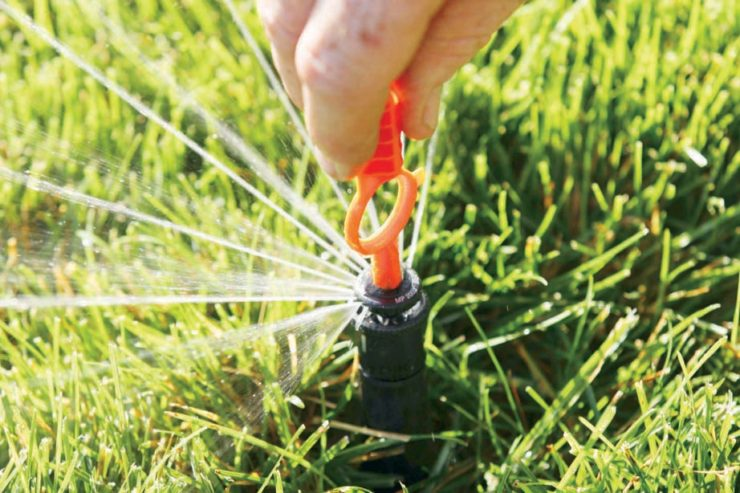

SprinklerUSA Services: Focus on Proper Design, Water-Efficient, and Cost-Effective Irrigation Systems
To design a water-efficient and cost-effective irrigation system, we include the following on all water irrigation designs:
- Site Analysis – We begin by gathering your input, assessing water meter size, water pressure, soil type, plant material to be irrigated, elevation changes, microclimatic factors (sun/shade ratio), and taking necessary measurements to create a base plan.
- Scaled Drawing – The sprinkler layout uses head-to-head spacing equal to the manufacturer's published radius of the head. Sprinkler heads are designed with matched precipitation rates for all heads within the same zone, ensuring uniform water application.
- Sprinkler Head Layout – Sprinkler heads are placed strategically to ensure head-to-head coverage for even water distribution. All heads will operate at matched precipitation rates within their zone for consistency.
- Drip Irrigation – SprinklerUSA designs the drip irrigation system with appropriate spacing and application rates. Pressure regulation and filtration are included to ensure optimal performance.
- Efficient Zone Layout – A key step in irrigation design is separating zones based on plants’ water requirements, microclimatic factors, and topography, ensuring efficient water use across different areas of your landscape.
- Progressive Pipe Sizing – Irrigation pipes are sized correctly, ensuring they do not exceed the 5 Liters Per Second (L.P.S) rule. This guarantees increased system performance and extends the system's lifespan.
- Hydraulic Statement – The hydraulic statement is a mathematical computation that determines an irrigation system's pressure losses and pressure requirements. This ensures that the system operates within the recommended pressure range as specified by the manufacturer. If necessary, pressure will be regulated to prevent exceeding the maximum allowed.
- Calculation of an Evapotranspiration (Et) Water Schedule – We provide an efficient irrigation schedule tailored to your landscape’s needs, rather than relying on a fixed calendar or clock schedule.
SprinklerUSA is committed to delivering customized irrigation systems tailored to your specific microclimate. If you are comparing bids, we encourage you to review the details and steps of each proposal, as we prioritize your satisfaction. For further information, ask Effrey Guzman.